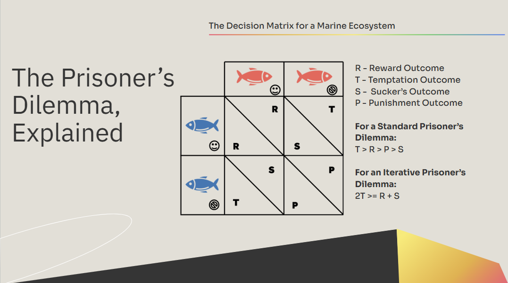
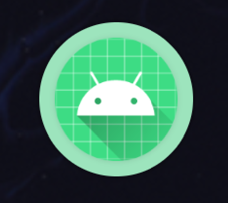
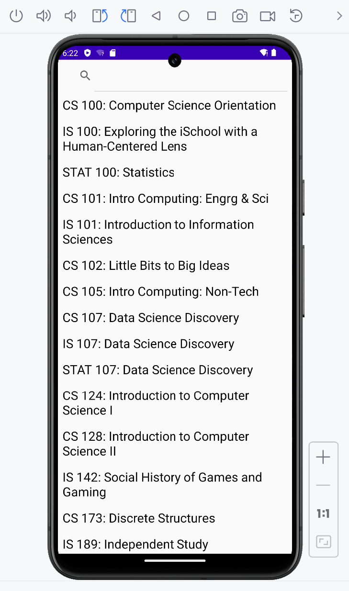
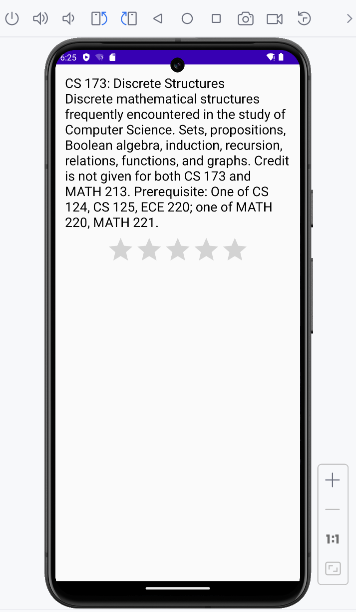

Machine Projects
I'm really interested in projects that has a focus on modelling and simulation. I like to use the machine to build a model from the real world. Get the numerical results and find the mathemetical patterns behind it. The algorithm & parallel computing really helpped my a lot in developping the programs.
CS Honor Project
Safer Encryption and Decryption Algorithm in Rust
Implemented the ChaCha20 encryption algorithm for secure data protection. Enhanced security by integrating a randomization function to strengthen encryption robustness. Optimized performance by testing with large datasets, refining efficiency and scalability.
Simulation of Prisoner's Delimma
Spatial Game Theories: Prisoner’s Delimma in Predator-Preys
Methods
Each player is assigned a “Strategy Set”, a 4-Vector that represents the transitional probabilities for each player to cooperate in a single iteration of the game. For Example: The Tit-For-Tat (TFT) Strategy Set for a single fish is [1, 0, 1, 0] This means that if the opponent fish cooperates, the probability of the first player cooperating is always set to 1 in the next step. Repeated Play (which we are observing) can be predicted and modeled by a Markov Chain, with the strategy vectors evolving over time with respect to a Markov Transition Matrix. Over multiple iterations, these Markov Chains should converge to a single Stationary Vector!
Presentation

Click the preview to open the full Google Slides presentation.
Computational Physics
Quantum Computation Simulation
Methods
Built Quantum Gates using IBM Qiskit. Run simulation and tested its performance and runtime
Fluid Dynamics
Methods
Produced a fluid dynamics simulation. The simulation is based on the lattice Boltzmann method. Simulate the microscopic behavior of the fluid using a 9-component model on a grid. Each of the 9 components represents a density of fluid moving in a different direction: stationary, up, down, left, right, and each of the diagonal directions. Propagation forward in time consists of three main steps
Software developpemnt
Rate UIUC Courses

Rate UIUC Courses is an Android application that allows students to explore, review, and evaluate UIUC courses through an intuitive mobile interface.


Robust & Parallel Application Design
The application was engineered with reliability and performance as key design goals.
- A well-designed client–server architecture ensures a stable, scalable, and reliable user experience.
- A robust transaction system based on ACID principles guarantees data consistency and protects correctness under concurrent access.
- An intelligent local caching strategy improves application performance by reducing latency and optimizing resource usage.